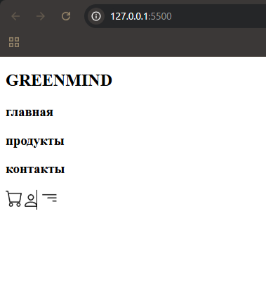

Урок 3. Хедер (header)
Подключение шрифтов
Чтобы подключить шрифты к сайту, вы можете сделать следующие действия:
-
1. Перейдите на Google Fonts
Определяет, как элементы будут выглядеть (цвета, шрифты, размеры и
пр.).
-
2. Найдите нужный вам шрифт (в данном случае Poppins) и нажмите на него.
-
3. Скопируйте ссылку для импорта.
<link href="https://fonts.googleapis.com/css2?family=Poppins:wght@400&display=swap" rel="stylesheet">
-
4. Вставьте эту ссылку в тег <head> HTML-документа:
- 5. Используйте шрифт в CSS:
Теперь шрифт будет применен к вашему сайту.
Container
Перед началом создания хедера в теге <body> создадим div с классом container, который обычно используется для обертки контента и установки ограничений по ширине, чтобы содержимое не растягивалось на весь экран.
<div class="container"></div>
И пропишем для него СSS правила, ограничивающие его ширину и отвечающие за центрирование
Создание хедера
Теперь же приступаем к созданию самого хедера, для этого создаем:
-
1. Секцию с классом "header", в которой будет располагаться хедер
-
2. Заголовок первого уровня <h1> с текстом "GREENMIND", который служит логотипом сайта. Класс "logo" будет использоваться для стилизации.
-
3. Навигационную панель
В этом теге пропишем еще два тега div с классами "navbar_text" (содержит текстовые ссылки или разделы навигации. Здесь представлены три раздела: "главная", "продукты", "контакты" для создания которых используем заголовки<h3>) и "navbar_img" (содержит изображения в тегах <img>, которые часто используются для иконок в навигации)
В итое получаем такой HTML код:

результат работы кода
К сожалению, данный код выводит элементы не в том виде, в котором они расположены на макете. Чтобы это исправить, необходимо прописать несколько CSS правил.
Стили
Начнем с создания базовых сбросов отступов и размерности элементов:
* {
padding: 0;
margin: 0;
box-sizing: border-box;
}Правила, прописанные после селектора "*", применяются ко всем элементам на странице; "padding" и "margin" отвечают за внешние и внутренние отступы(в данном случае равны нулю, убирая все отступы), а "box-sizing: border-box" устанавливает, что ширина и высота элемента будут включать также внутренние отступы и границы.
Теперь создадим переменные для основных цветов макета:
:root {
--color-black: #1E1E1E;
--color-green: #C1DCDC;
}
Псевдокласс ":root" представляет корневой элемент документа. Здесь мы объявляем CSS переменные, отвечающие за цвета.
Далее приступим к стилизации самого хедера. Выделяем весь HTML код, нажимаем (alt + X), переходим в css/styles.css и с помощью комбинации клавишь (ctrl + V) вставляем все прописанные ранее классы.
- 1. Стилизация секции header
.header {
height: 112px;
display: flex;
justify-content:
space-between;
}"height" yстанавливает высоту заголовка, "display: flex" применяет flexbox для выравнивания элементов (подробнее это свойство будет разобрано в отдельном
уроке).
-
2. Стиль для логотипа
.logo {
font-size: 24px;
font-weight: 400;
line-height: 36px;
text-align: left;
color: var(--color-black);
margin-right: 102px;
margin-top: 44px;
} Значения для таких свойств, как "font-size", "font-weight" "line-height" и "text-align" можно посмотреть в макете при переходе в режим разработчика, выделив нужный элемент и просмотрев его код.
"color" задает цвет текста (в данном случае нужный нам цвет уже определен и содержится в переменной --color-black), "margin-right" и "margin-top" создают внешние отступы справа и сверху (их значение можно найти на макете, выделив нужный нам элемент и зажав alt)
- 3. Стилизация навигационной панели
.navbar {
width: 100%;
display: flex;
justify-content: space-between;
}Опять же используем
flexbox для выравнивания содержащихся в навигационной панеле "navbar_text" и "navbar_img"; " width: 100%" позволяет элементу занимать всю доступную ему зону.
- 4. Установим стиль для текста навигации
.navbar_text {
display: flex;
margin-top: 48px;
}
.navbar_text > h3 {
font-size: 18px;
font-weight: 500;
line-height: 27px;
text-align: left;
margin-right: 48px;
opacity: 0.5;
}".navbar_text > h3" это селектор, который выбирает все элементы <h3>, являющиеся непосредственными дочерними элементами элемента с классом .navbar_text
"opacity: 0.5" устанавливает уровень прозрачности текста. Значение 0.5 означает, что текст будет полупрозрачным (50% прозрачности). Но так как на макете не все элементы являются полупрозрачными, нужно выделить один из них. В этом нам пожет класс ".mark", которому мы пропишем "opacity: 1"
Селектор "h3.mark" выбирает только элементы с тегом <h3>, содержащие класс "mark"
- 5. Настроим стиль для иконок в навигации
.navbar_img {
display: flex;
flex-direction: row;
flex-wrap: wrap;
margin-top: 13px;
}
.navbar_img > img {
margin-left: 51px;
}Аналогично предыдущему пункту.